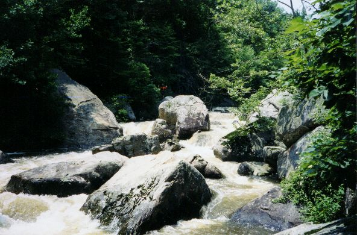

(photo courtesy Sloan Bryan)

(photo courtesy Sloan Bryan)
| Ron runs the put-in dam. This is
an important picture because it is a good way to judge level. The
majority of the dam is just barely covered by water. This is good.
If there is 2-3" of water over the dam, you may want to RUN AWAY.
We've tried it that high and once you reach Coon, it is not pretty.
(photo courtesy Sloan Bryan) |
|
| Dave Branham rounds a bend on Flat Rock. The water was fairly high on this trip. | |
|
Ron runs a Flat Rock drop
(photo courtesy Sloan Bryan) |
| Wade Amis does the undercut tango. All emerged unscathed. |
|  | The upper part of the biggest Class V on Flat Rock. |
| Ron on what may be same rapid at a more
reasonable level.
(photo courtesy Sloan Bryan) |
|
| More of same
(photo courtesy Sloan Bryan) |
|
| Ron runs the big slot at the end of Flat
Rock. This was cool at higher water, I went deep enough to touch
the bottom
(photo courtesy Sloan Bryan) |
|
| The end of the last rapid on Flat Rock at high water. Things got ugly from here. |
 |
Ron Launches off a Coon drop
(photo courtesy Sloan Bryan) |
| I remember this rapid on Coon. Itwas
impressive as hell at high water. It took only a few seconds to realize
that a walk was in order.
(photo courtesy Sloan Bryan) |
|
| Ron enters the top of a complex big 'un
(photo courtesy Sloan Bryan) |
|
| Sloan gets in tight with a boulder garden
(photo courtesy Sloan Bryan) |
|
| Sloan traverses the infamous Coon Creek
'cave rapid'
(photo courtesy Sloan Bryan) |